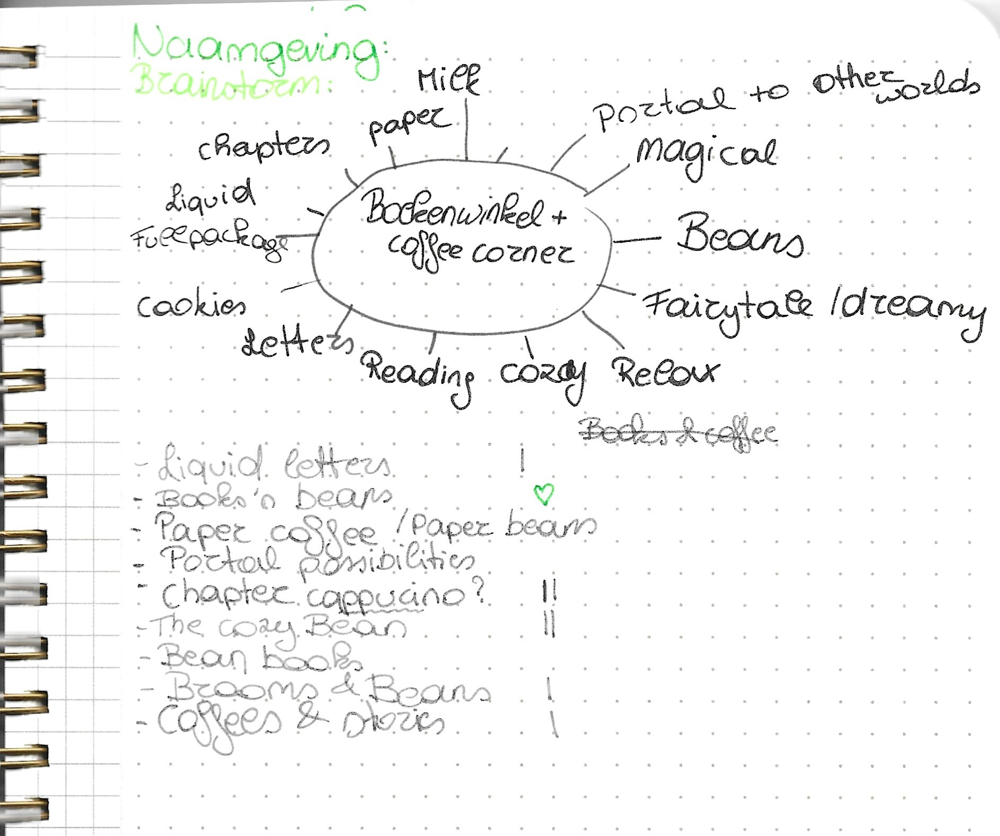
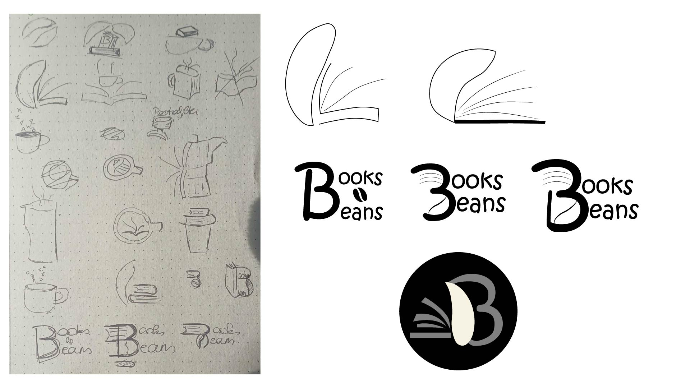
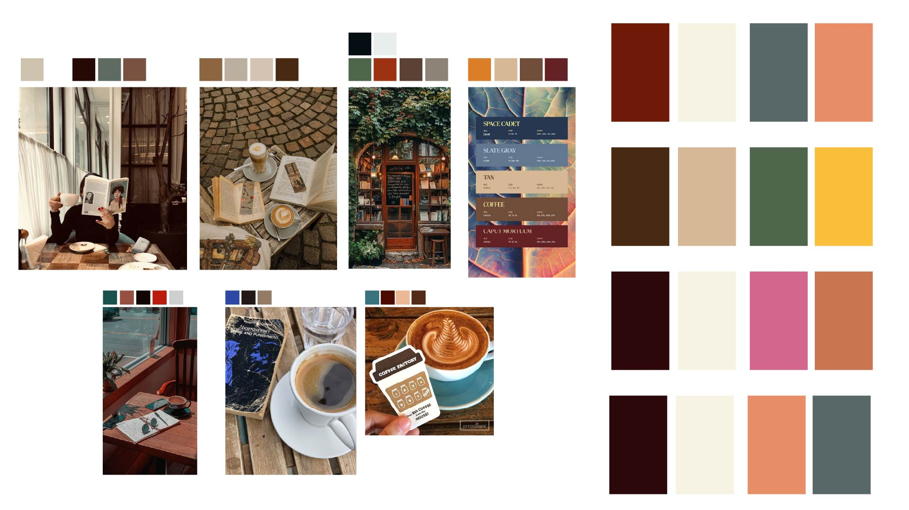

Brainstorm
Dit is een cursus die ik volgde op DOMESTIKA: "Brand Design: Create an Innovative Concept". Mijn doel? Een andere invalshoek vinden om tot een innovatieve branding te komen.
Als basis heb ik mijn droom project genomen: een boekenwinkel waar een mini coffee corner is. Mensen hebben er ook de mogelijkheid om er gezellig iets te drinken als het mooi weer is, of een kleine snack. Hievoor heb ik meteen onderzoek gedaan naar de concurrentie, trefwoorden die bij het concept passen, doelmarkt, welke factor zorgt ervoor dat het zich onderscheid van de rest... Aan de hand daarvan ben ik verder beginnen bouwen voor de opdrachten.
Concept in tekst
Kan je je een plek voorstellen waar je even kan ontsnappen aan de realiteit? Wegdromen in een boek met een cozy drankje aan je zij in een dromige omgeving. Of browzen voor een nieuw boek, omringd door magie en rust.
Moodboard
Na al dat brainstormen ben ik op zoek gegaan naar welke afbeeldingen dezelfde vibe weergeven als ik in de zaak en branding zou willen. Daar ligt de focus voornamelijk op: warmte uitstralen, het verhaal duidelijk maken, cozy vibes met een beetje mysterie en magie.

Naamgeving
Een creatieve naam zoeken dat het verhaal verteld van een bedrijf is een hele opdracht. Ik wou iets creatief doen met een subtiele link naar boeken en koffie maar hoe?
Alles wat in me opkwam kan je terugvinden in de onderstaande mindmap. En zo kwam uiteindelijk de naam "Books and Beans" naar boven.

Logo
In deze cursus werd er aangeraden om met dezelfde mindmap als hierboven te werken. Ik heb er verschillende aspecten uit gekozen en die geschetst. Die ben ik met elkaar beginnen combineren om ervoor te zorgen dat er iets leuk uit kwam. Mijn doel was voornamelijk iets leuks vinden dat duidelijkt maakt wat je zou kunnen vinden in de winkel.
Na even op papier te schetsen, ben ik over gegaan naar het digitale. Alle ideeën kan je hieronder op de afbeelding vinden. Uiteindelijk ben ik gegaan voor het logo rechts onder. Het lijkt op de binnenkant van een kopje koffie, de B omdat het 2x met een B begint en een open boek.

Kleuren
Iedereen heeft wel een idee van welke kleuren warm zijn en welke koud. Maar hoe kan je deze nu correct kiezen voor dit concept?
De cursus ging als volgt: zoek afbeeldingen die hetzelfde uitstralen zoals jij zou willen. Selecteer er enkele kleuren uit, speel met de kleuren wie weet komt er wel iets uit. Dat heb ik wel gedaan... Maar met een beetje help van de COOLORS website, ben ik tot een leuker kleurenconcept gekomen.
